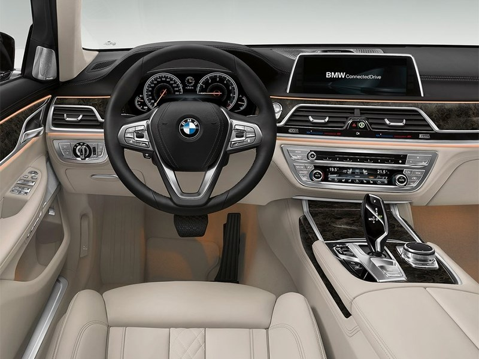
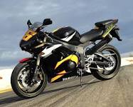
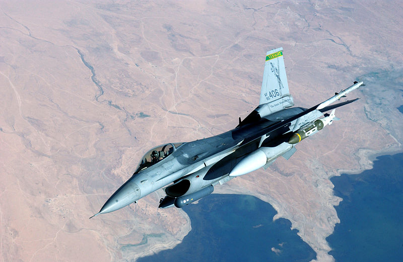
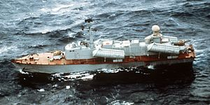

Мотоци́кл (от фр. motocycle — средство передвижения. От лат. mōtor — приводящий в движение и греч. κύκλος — круг, колесо)
— двухколёсное (либо трёхколёсное) транспортное средство с механическим двигателем (двигатель внутреннего сгорания,
электрический, пневматический) главными отличительными чертами которого являются: вертикальная посадка водителя
(мотоциклиста), наличие боковых ножных упоров (площадок, подножек), прямое (безредукторное) управление передним поворотным
колесом.

Классические мотоциклы включают в себя двухколесные, двухколесные с боковой коляской, трёхколесные (трайк)
и четырёхколесные (квадроцикл), снегоходы (имеют гусеничный привод). Помимо количества колес, мотоциклы также
различаются по своей конструкции и размерам: мопеды, мокики (имеют небольшой размер двигателя, как правило до 50 см³)
мотороллеры или скутеры (закрытый кузовом двигатель расположенный под сиденьем водителя и площадки для ног), и собственно
сами мотоциклы различных типов: классические, круизеры, туреры, спортивные, шоссейные, кроссовые, эндуро, чопперы.
Самолёт — воздушное судно, предназначенное для полётов в атмосфере с помощью силовой установки,
создающей тягу, и неподвижного относительно других частей аппарата крыла, создающего подъёмную силу[1][2]. Неподвижное
крыло отличает самолёт от махолёта (орнитоптера) и вертолёта, а наличие двигателя — от планёра. От дирижабля и аэростата
самолёт отличается тем, что использует аэродинамический, а не аэростатический способ создания подъёмной силы.

Конструкция:
Крыло — создаёт при поступательном движении самолёта необходимую для полёта подъёмную силу за счёт возникающей в
набегающем потоке воздуха разницы давлений на нижнюю и верхнюю поверхности крыла: давление на нижнюю поверхность
самолётного крыла больше, чем давление на верхнюю его поверхность. На крыле располагаются аэродинамические органы
управления (элероны, элевоны и др.), а также механизация крыла — то есть устройства, служащие для управления подъёмной
силой и сопротивлением самолёта.
Фюзеляж — предназначен для размещения экипажа, пассажиров, грузов и оборудования, а также для крепления крыла,
оперения, шасси, двигателей и т. п. (является как бы «телом» самолёта). Известны самолёты без фюзеляжа (например —
«летающее крыло»).
Оперение — аэродинамические поверхности, предназначенные для обеспечения устойчивости, управляемости и балансировки
самолёта. Для управления самолётом на оперении располагают отклоняемые поверхности — аэродинамические рули (руль высоты,
руль направления), или же делают поверхности оперения цельноповоротными.
Шасси — система опор, необходимых для разбега самолёта при взлёте, пробега при посадке, а также передвижения и стоянки
его на земле. Наибольшее распространение имеет колёсное шасси. Также известны конструкции шасси с лыжами, поплавками,
полозьями. В СССР осуществлялись эксперименты с гусеничным шасси и шасси на воздушной подушке. Многие современные самолёты,
в частности большинство самолётов военного назначения, а также пассажирских самолётов, имеют убираемое шасси.
Силовая установка — создаёт необходимую тягу,
которая, уравновешивая аэродинамическое сопротивление, обеспечивает самолёту поступательное движение.
Системы бортового оборудования — различное оборудование, которое позволяет выполнять полёты при любых условиях.
Приблизительно последние 30-40 лет бортовая электроника является наиболее умным, сложным и дорогостоящим оборудованием,
превосходящим по стоимости всю остальную конструкцию самолёта.
Ка́тер — (англ. cutter) — общее название небольших судов или небольших военных кораблей (пассажирские, грузовые,
спасательные, туристические, ракетные, сторожевые и др.).
Главное отличие малых катеров от лодок — наличие мотора в качестве силовой установки, а от моторных лодок — его
стационарная установка.


Изначально катерами назывались лёгкие одномачтовые суда. Впрочем, широко распространены катера
с каютами со спальными местами, с гальюном, при этом рассчитанные на установку нескольких именно подвесных моторов,
нередко общей мощностью в несколько сотен л. с.).
По разным источникам, первой страной занявшейся проектированием и постройкой ракетных катеров был СССР. Официально
первый ракетный катер был принят на вооружение в 1960 году. Это были маневренные, скоростные катера 183Р «Комар».
Он был вооружён 2 ракетами. Следующим стал проект 205 («Osa» по классификации НАТО), оснащённый уже 4 ракетами П-15.
Второй страной, которая обзавелась собственными ракетными катерами, был Израиль, за основу был положен проект немецкого
торпедного катера типа «Ягуар», строились катера во Франции, ракетное вооружение было израильской разработки. Это были
катера типа Саар, они вступили в строй в 1967—1968 году.
Первое боевое применение
21 октября 1967 года израильский эсминец «Эйлат» водоизмещением 1710 тонн был потоплен четырьмя ракетами П-15,
выпущенными с египетских ракетных катеров типа «Комар» по личному приказу президента Насера в ответ на уничтожение
двух торпедных катеров израильским эсминцем и двумя торпедными катерами тремя месяцами ранее. Это был первый случай
боевого применения противокорабельных ракет, выпущенных с ракетного катера.[1] Он показал, что ракетные катера являются
действенным оружием современной войны, и подстегнул другие страны к созданию собственных ракетных катеров и
противокорабельных ракет.
Конструкция
Первоначально ракетные катера представляли собой переоборудованные торпедные. Способ «снять торпеды — поставить ракеты»
был общим при строительстве всех типов. Однако по мере эксплуатации оформились новые требования.Основное оружие — ракета
— стало чувствительнее к условиям содержания и применения. Поэтому пришлось создавать пусковые установки специально для
корабельных условий. Например, катер пр. 183Р нес ракеты в ангарах.[2] Проект 205/205У в ходе модификации сменил ангары на
контейнеры, обеспечивающие ракетам приемлемый климат. Понадобились и системы контроля за климатом. Соответственно,
пусковые становились тяжелее и больше. При старте ракеты образуются реактивные газы. Потребовались их отвод
и защита экипажа и основных систем. Изменилась конструкция надстройки и участков палубы. Дальность действия ракет
означает, что пуски производятся в основном за пределами визуального обнаружения. Обязательной стала установка радаров
обнаружения и управления оружием. Новые проекты ракетных катеров стали использовать системный подход, рассматривая
катер и оружие как взаимосвязанные части одного целого. Возросло водоизмещение и удельный вес вспомогательных механизмов,
обеспечивающих электронику. Дальнейшим развитием класса стали ракетные корветы (например, израильский «Саар 5»), а в
СССР/России малые ракетные корабли (проекты 1234, 1240, 1241 и пр.)